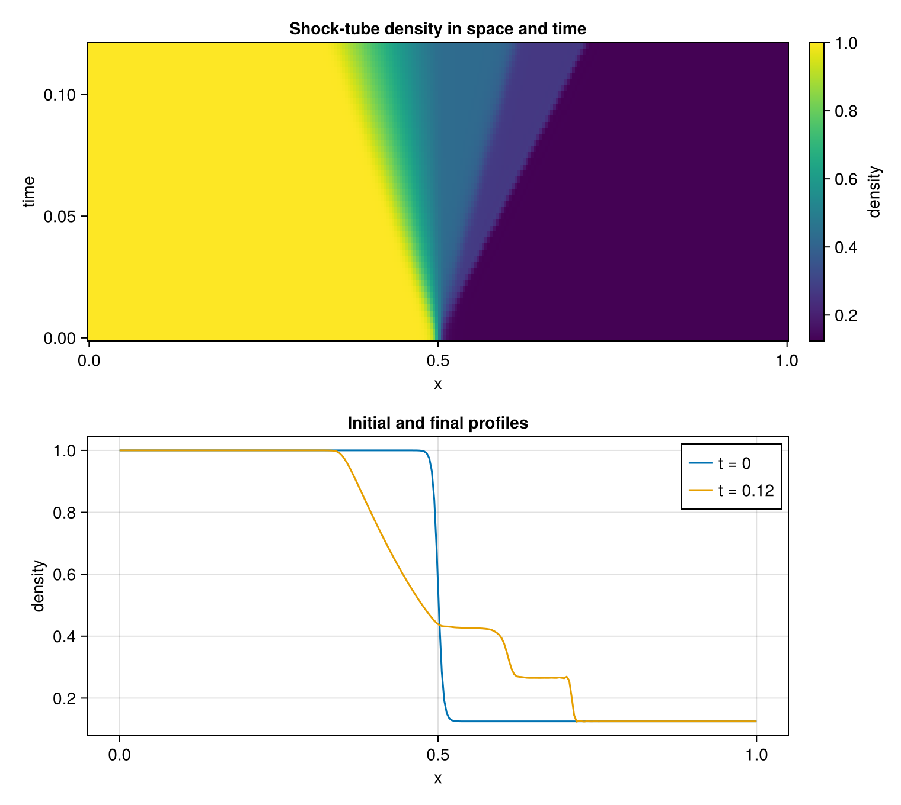

Regularizing a one-dimensional shock
Smooth solutions are the natural regime of the central compact derivative introduced in the first tutorial. A shock instead contains a jump: no finite grid can resolve its formal derivative, and a nearly nondissipative central scheme can develop grid-scale oscillations around it.
CompactLES uses two regularization mechanisms. Shock sensors add localized artificial viscosity, conductivity, and diffusivity to the physical fluxes. A compact low-pass filter separately removes the shortest resolved waves from the conserved state after a completed timestep. This tutorial shows their combined action in a small Sod shock tube.
using MPI
MPI.Initialized() || MPI.Init(threadlevel=:funneled)
using CompactLES
using CairoMakie
CairoMakie.activate!(type = "png")Initial states
A diaphragm at $x=0.5$ initially separates two stationary states. Removing it produces a left-moving rarefaction, a right-moving contact discontinuity, and a right-moving shock. The transition is spread over about two cells so the initial condition does not present an unresolved mathematical jump to the first Runge–Kutta stage.
nx = 256
hx = 1 / (nx - 1)
problem = Problem(
name = "Sod shock tube",
eos = IdealSpecies("gas"; R = 1.0, gamma = 1.4),
domain = ((0.0, 1.0), (0.0, 1.0), (0.0, 1.0)),
bcs = ((SlipWallBC(), SlipWallBC()),
(PeriodicBC(), PeriodicBC()),
(PeriodicBC(), PeriodicBC())),
ic = (x, y, z) -> begin
blend = tanh_blend(x, 0.5, 2hx)
Prim(p = 1.0 + blend * (0.1 - 1.0),
rho = 1.0 + blend * (0.125 - 1.0))
end,
)Problem "Sod shock tube"
domain: (0.0, 1.0) × (0.0, 1.0) × (0.0, 1.0)
metric: CartesianMetric
EOS: IdealMixture (1 species)
boundary conditions: SlipWallBC / SlipWallBC, PeriodicBC / PeriodicBC, PeriodicBC / PeriodicBC
sources: noneStrong startup transients require a smaller CFL than smooth flow. Retry control also permits a failed step to roll back and retry at a reduced CFL. The Cook-style coefficients in ArtParams are exposed so the numerical assumptions are visible. They are calibration choices conditional on the grid, filter, and flow regime, not universal fluid constants.
numerics = Numerics(
n_global = (nx, 1, 1),
art = ArtParams(C_mu = 0.002, C_beta = 1.0,
C_kappa = 0.01, C_D = 0.01),
cfl = 0.15,
control = StepControl(retries = 2),
filter_interval = 1,
)
solver, Q = setup(problem, numerics)(Solver(grid=256 × 1 × 1, t=0.0, step=0, cfl=0.15, metric=CartesianMetric), ConservedState{Float64}(264 × 1 × 1 × 5))line_profile returns the density along $x$ as a (coordinate, value) pair, resolving :rho through the same field catalog the output writers use.
x, rho0 = line_profile(solver, Q, :rho)
tfinal = 0.12
times = collect(range(0.0, tfinal; length = 49))
snapshots = [rho0]
record = Callback(AtTime(times[2:end]), function (solver, Q)
push!(snapshots, line_profile(solver, Q, :rho)[2])
nothing
end)
run!(solver, Q; tfinal, nmax = 20_000, callback = record)
rho_xt = reduce(hcat, snapshots)256×49 Matrix{Float64}:
1.0 1.0 1.0 1.0 1.0 … 1.0 1.0 1.0 1.0 1.0
1.0 1.0 1.0 1.0 1.0 1.0 1.0 1.0 1.0 1.0
1.0 1.0 1.0 1.0 1.0 1.0 1.0 1.0 1.0 1.0
1.0 1.0 1.0 1.0 1.0 1.0 1.0 1.0 1.0 1.0
1.0 1.0 1.0 1.0 1.0 1.0 1.0 1.0 1.0 1.0
1.0 1.0 1.0 1.0 1.0 … 1.0 1.0 1.0 1.0 1.0
1.0 1.0 1.0 1.0 1.0 1.0 1.0 1.0 1.0 1.0
1.0 1.0 1.0 1.0 1.0 1.0 1.0 1.0 1.0 1.0
1.0 1.0 1.0 1.0 1.0 1.0 1.0 1.0 1.0 1.0
1.0 1.0 1.0 1.0 1.0 1.0 1.0 1.0 1.0 1.0
⋮ ⋱ ⋮
0.125 0.125 0.125 0.125 0.125 0.125 0.125 0.125 0.125 0.125
0.125 0.125 0.125 0.125 0.125 0.125 0.125 0.125 0.125 0.125
0.125 0.125 0.125 0.125 0.125 0.125 0.125 0.125 0.125 0.125
0.125 0.125 0.125 0.125 0.125 … 0.125 0.125 0.125 0.125 0.125
0.125 0.125 0.125 0.125 0.125 0.125 0.125 0.125 0.125 0.125
0.125 0.125 0.125 0.125 0.125 0.125 0.125 0.125 0.125 0.125
0.125 0.125 0.125 0.125 0.125 0.125 0.125 0.125 0.125 0.125
0.125 0.125 0.125 0.125 0.125 0.125 0.125 0.125 0.125 0.125
0.125 0.125 0.125 0.125 0.125 … 0.125 0.125 0.125 0.125 0.125Wave pattern
The space–time view distinguishes the three waves by slope and width. The rarefaction occupies a widening fan, the contact remains sharp but moves more slowly than the shock, and the shock forms the steep rightmost trajectory. Artificial properties act locally near the two sharp features. Filtering acts globally after each completed step because filter_interval=1, whether or not a sensor is active at a particular point.
fig = Figure(size = (760, 680))
ax1 = Axis(fig[1, 1], xlabel = "x", ylabel = "time",
title = "Shock-tube density in space and time")
hm = heatmap!(ax1, x, times, rho_xt; colormap = :viridis)
Colorbar(fig[1, 2], hm, label = "density")
ax2 = Axis(fig[2, 1], xlabel = "x", ylabel = "density",
title = "Initial and final profiles")
lines!(ax2, x, rho_xt[:, 1], label = "t = 0")
lines!(ax2, x, rho_xt[:, end], label = "t = $(tfinal)")
axislegend(ax2, position = :rt)
fig
What this calculation establishes
The figure is a qualitative diagnostic, not an accuracy validation. Absolute shock position and post-shock states must be compared with the exact Riemann solution; that independent comparison is part of test/runtests.jl. The artificial-property constants and filter strength are modeling choices, not universal constants. See Filtering and artificial properties and Verification, validation, and calibration before changing them for a production calculation.
This page was generated using Literate.jl.